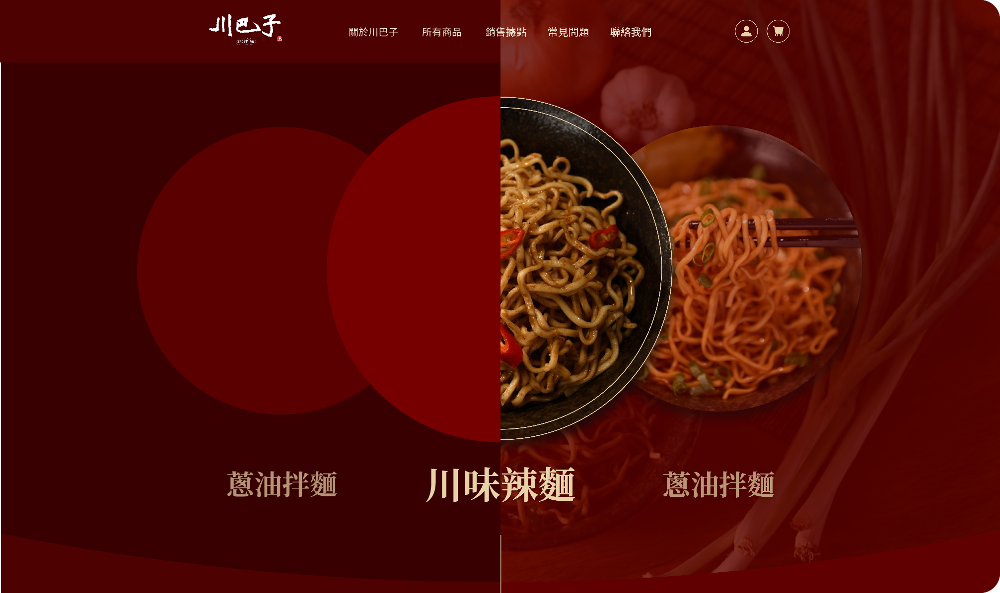

Home
Home

專案介紹
文文文文文文文文文文文文文文文文文文文文文文文文文文文文文文文文文文文文文文文文文文文文文文文文文文文文文文文文文文文文文文文文文文文文文文文文文文文文文文文文文文文文文文文文文文文文文文文文文文文文文文文文文文文文文文文文文文文文文文文文文文文文文文文文文文文文文文文文文文文文文文文文設計目標
文文文文文文文文文文文文文文文文文文文文文文文文文文文文文文文文文文文文文文文文文文文文文文文文文文文文文文文文文文文文文文文文文文文文文文文文文文文文FONT & COLOR
配色選擇上承襲「川巴子」的紅黑招牌以朱紅色為官網主色調，也藉以傳遞川巴子的麻辣印象，再以麵體的米白、招牌的黑色為輔色，讓整體配色與企業形象環環相扣。 標題字體選用稜角分明的中式宋體呼應品牌調性；內文則選擇可視性較好，易閱讀的思源黑體。

1920 px
設定為網格集中、左右留白居多的設計，以利於聚焦消費著視覺至品牌特點排版序列
在構思 wireframe 時，一直在思考如何能在傳遞產品特色的同時閱讀上又不會過於攏墜，最終將排版以置中瀏覽的方式呈現，目的讓消費者能循序漸進導讀企業脈絡，從企業啟蒙至產品介紹再到最後煮後的完成品，藉此加深消費者對品牌間的印象。

Banner
將拌麵品項放置 Banner 區塊加入 Slider 效果，目的讓使用者進入網站第一眼能馬上清楚商品內容和最終模樣。產品動態
往下 Scroll 頁面時跟隨滑鼠屬標呈現「產品縮放」與「品名交叉」的動畫，可加深使用者印象同時增加網頁停留時間。產品特點
擷取照片中產品區域並降低背景飽和，一來能強調最終產品示意圖，二來讓使用者目光焦距在產品本身不被背景混淆。